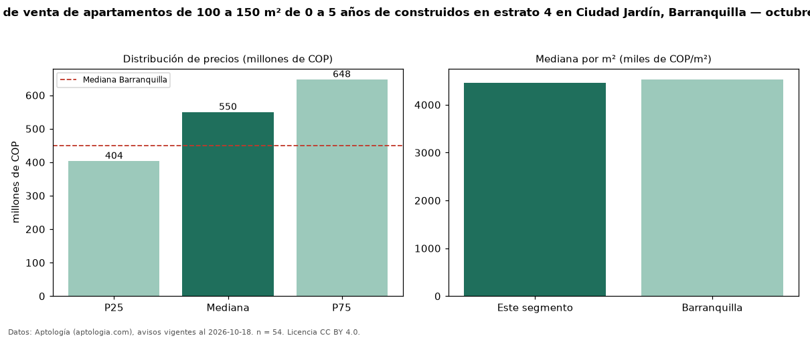

Precio de venta de apartamentos de 100 a 150 m² de 0 a 5 años de construidos en estrato 4 en Ciudad Jardín, Barranquilla — octubre 2026
En Ciudad Jardín, Barranquilla, la mediana de precio de venta de apartamentos de 100 a 150 m² de 0 a 5 años de construidos en estrato 4 es COP 550 millones, según 54 avisos vigentes. Frente a la mediana de los apartamentos de 100 a 150 m² en estrato 4 en venta de Ciudad Jardín (COP 530 millones, n = 74), queda 4 % por encima; este segmento reúne el 73 % de esos avisos. Por metro cuadrado, la mediana es COP 4,46 millones/m² (n = 51), 4 % por encima de los apartamentos de 100 a 150 m² en estrato 4 en venta de Ciudad Jardín (COP 4,29 millones/m²). El área mediana anunciada es 115 m². El segmento con más oferta es el de 3 o más habitaciones (50 avisos, mediana COP 572 millones). La administración mediana declarada es COP 511.000 al mes (n = 33). La mediana de todos los apartamentos en venta de Barranquilla es COP 450 millones (+22 % de diferencia). La mitad central de los avisos va de COP 404 millones a COP 648 millones (razón 1,6), una dispersión moderada. Datos: Aptología (aptologia.com), CC BY 4.0 — https://www.aptologia.com/venta/barranquilla/ciudad-jardin. Archivos: PDF, CSV con las cifras y gráfica PNG.

| Avisos únicos | 54 |
|---|---|
| Percentil 25 | COP 403.750.000 |
| Mediana | COP 550.000.000 |
| Percentil 75 | COP 647.500.000 |
| Mediana por m² | COP 4.456.521 |
Fuente: avisos vigentes de portales inmobiliarios recopilados por Aptología, deduplicados (mínimo 30 avisos únicos por celda). Precios pedidos, no cerrados. Fecha: 2026-10-18.